Tutorial 3: Tables and Loops¶
By now you should be able to set up a flowchart, run a job, and look at the results in the Dashboard. If not, please go back to Tutorial 1: Getting Started and Tutorial 1: Getting Started because from now on these tutorial assume that you have mastered the basics, so much less detail will be given.
While it is nice to be able to run a complicated simulation on a single compound, it is often much more useful to run the same protocol on a number of compounds to look for trends of find the compounds with the desired properties. In this tutorial we will explore how to do this in SEAMM. To keep this simple, we’ll again create molecules from SMILES but rather than one at a time, we’ll put the list of SMILES strings in a .csv file, loop over the lines of the file, and calculate some properties, this time using MOPAC.
First, prepare a file in a well-known place with SMILES strings, like this:
SMILES
C
CC
CCO
CCS
OCCO
c1ccccc1
c1ccccc1O
Use the extension .csv (for comma-separated-values, which is a standard format for spreadsheets like Excel). For this tutorial I made a subdirectory of ~/SEAMM called data and named the file smiles.csv.
Make sure the the Dashboard and JobServer are running – see Installing SEAMM if you need help with this. And start SEAMM:
conda activate seamm
seamm
Create flowchart with the following steps:
Table – this is where we will read the table that you made
Join
Loop – this will be set to loop over the molecules in the table
FromSMILES – will create each structure in turn
MOPAC – will optimize the geometry and calculate properties
Table – will print the table so we can see the progress
Table – will save the table
It should look like this:
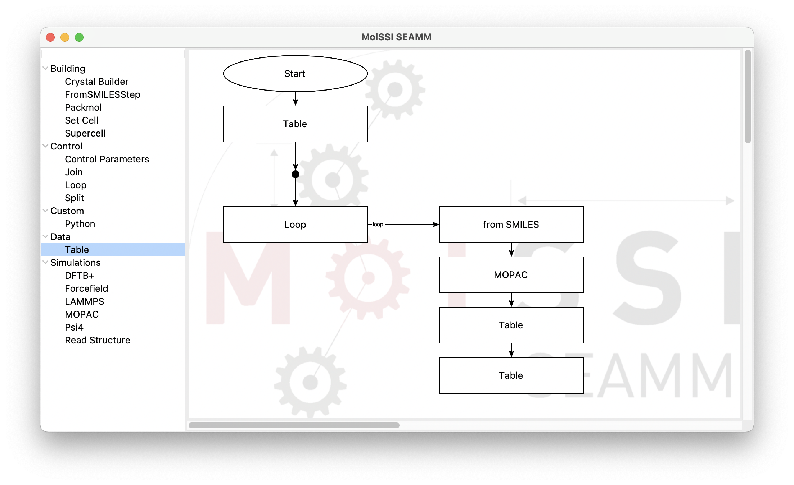
The initial skeleton of the flowchart.¶
Open the dialog for the first Table step either by right-clicking and selecting Edit… from the menu, or simply double-clicking the step. Change the Operation to read and type the path to your file in the from file entryfield:
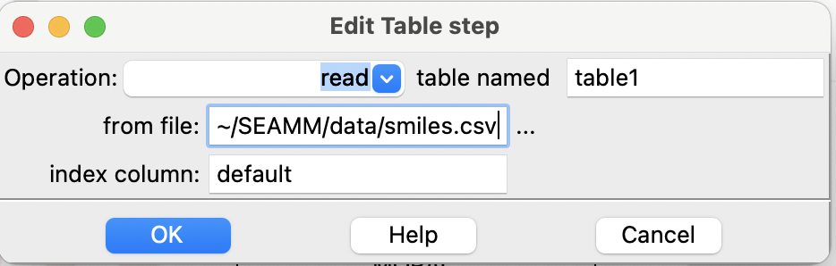
The dialog for the first Table step.¶
Now edit the Loop step and change the first item from For to For rows in table by clicking on the arrow on the right and selecting that option from the menu.
Next is the FromSMILES step. Edit it, and set the SMILES entry to $_row[“SMILES”]:
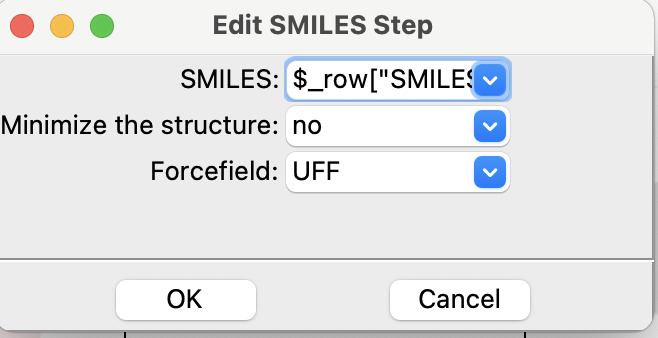
The dialog for the FromSMILES step.¶
The loop automatically sets some variables with useful information. All of these variables start with and underscore _ to prevent clashing with any variables you use. So don’t create variables starting with an underscore! When looping over a table, the variable _row is a dictionary labeled by the column headers containing the values for the current row. Hence $_row[“SMILES”] is the SMILES string. If our table had more columns we could access each value using the name of the column.
Now edit MOPAC. Like DFTB+, MOPAC presents a sub-flowchart. Add a single Optimization stage and edit it:
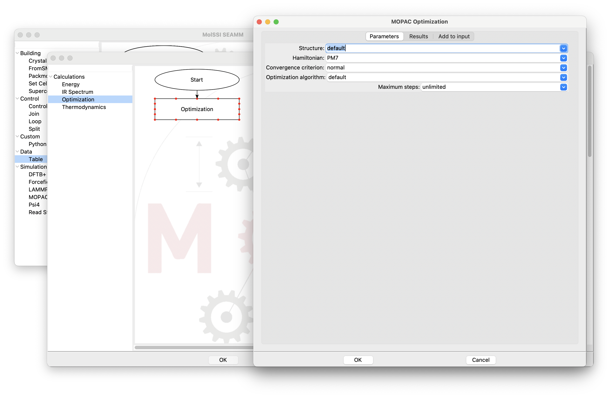
The dialog for the MOPAC Optimization step.¶
Click on the Results tab at the top of the page:
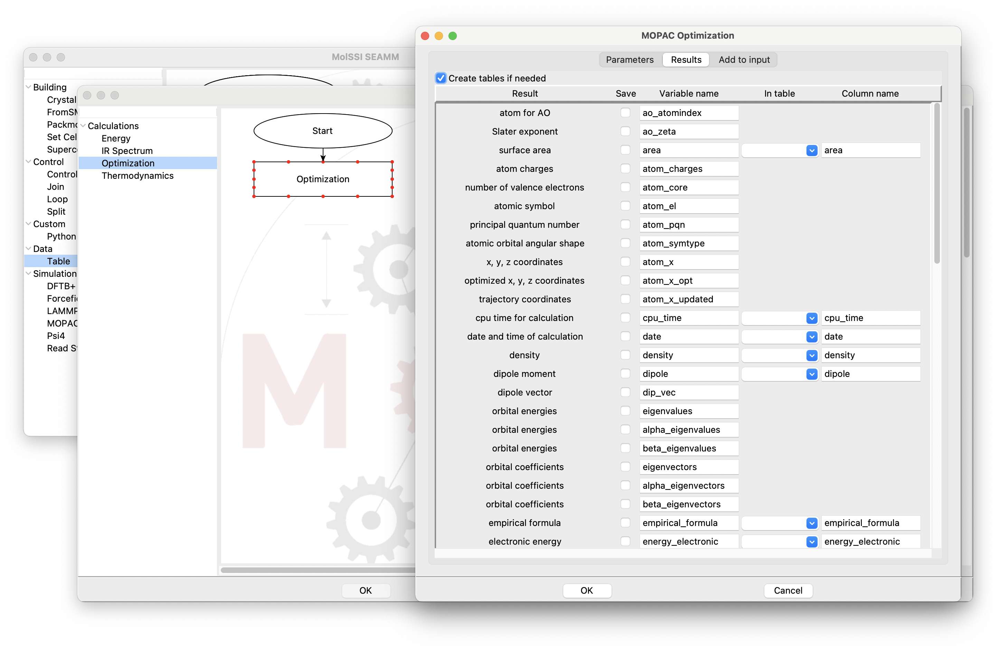
Saving the results from a MOPAC optimization calculation.¶
There are five columns in the table of results:
- Result
The property or other calculated result
- Save
Check this if you want to save the value in a variable.
- Variable name
The name for the variable, with a default name. You can edit this name.
- In table
The table to store the result in.
- Column name
The name of the column in the table.
Only scalar values can be stored in tables, which is why more results can be stored in variables than in tables. We aren’t interesting in using variables in this tutorial, so we will ignore those columns. However, let’s save the area, dipole, heat of formation, ionization potential, and volume to our table, which was named table1. Type in table1 in the Table column for each of the above properties.
Hint
You can copy and past as you normally do, by using ⌘C or ^C to copy and ⌘V or ^V to paste.
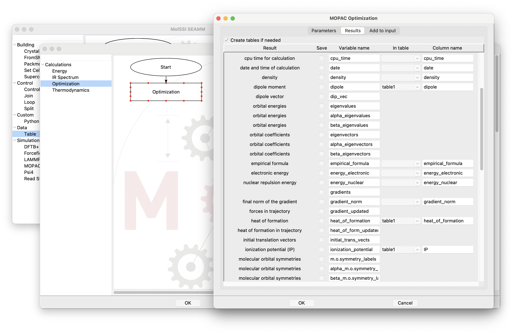
Saving results from Optimization in MOPAC.¶
Note that I changed the column name for the ionization potential to IP to make it a bit shorter than the default. Click OK to save the changes to the results, and click OK to save the sub-flowchart for MOPAC.
Now for the last two Table steps. In the first, change the Operation to save, and in the second change it to print current row. We save the table after every molecule so we don’t lose work if e.g. the machine crashes, and by printing the current row we’ll be able to see progress. MOPAC is very fast, and we are only running a handful of molecules, but these aspects would be important if we were running thousands of structures and particulalrly if we were using a slower quantum chemistry method where each calculation might take minutes or hours.
Just about done! We have set up all the steps needed and are almost ready to run the calculation, but first we need to close the loop in the flowchart. To do this we are going to drag an arrow from the last Table step up to the Join step just before the loop. You’ve probably noticed that when the mouse is over a step, red dots appear around the edge of the step. These are connection points. When you put the mouse over one of the connection points, the red dot becomes larger indicating that it is active:
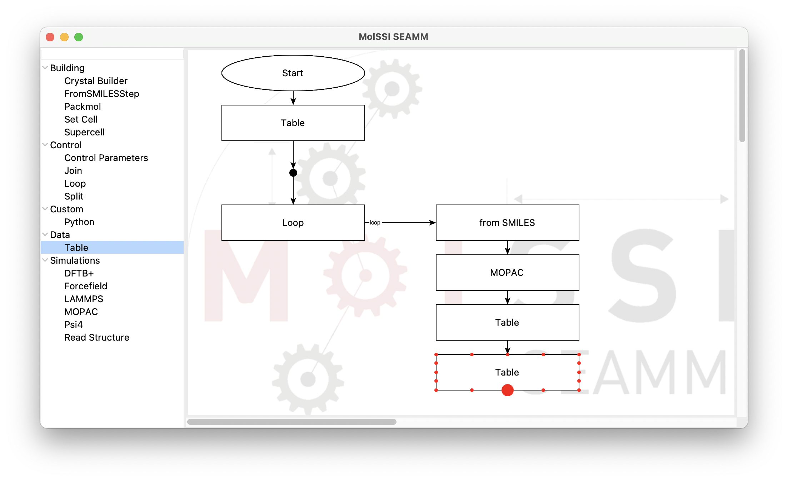
Active connection dot on last Table step.¶
When the connection dot is active, click on the mouse and drag to the Join step. As you get close connection dots will appear on the Join step, hover over the one on the right side until it becomes active and release the mouse button to make the connection.
Note
At the moment the positioning of the mouse on the Join step is quite sensitive, so you will need to be careful. Move the mouse around a little bit until the correct dot becomes active. If you release the mouse button and the line disappears it is becuase you weren’t actually on the dot – perhaps the mouse moved a little as you let the button go. If so, just try again. We’ll fix this issue shortly!
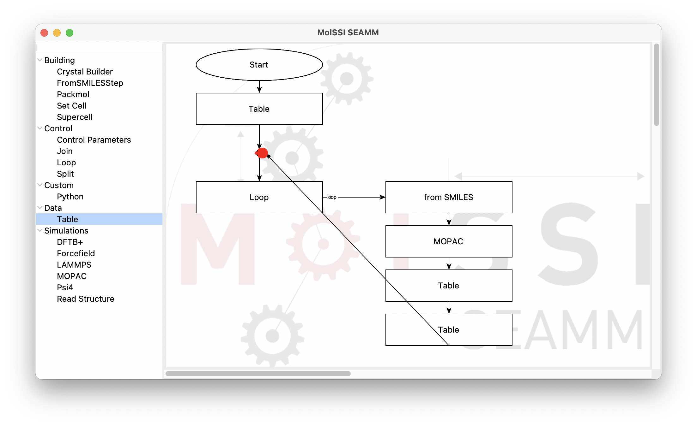
Dropping the connection on the Join step.¶
When you have successfully connected the last Table step to the Join step, your flowchart will look like this:
The connection closing the loop.¶
While the flowchart will work, it is not very pretty. Let’s celan it up. Under the Edit menu click on Clean layout. This will automatically clean the layout of the flowchart to a standard form:
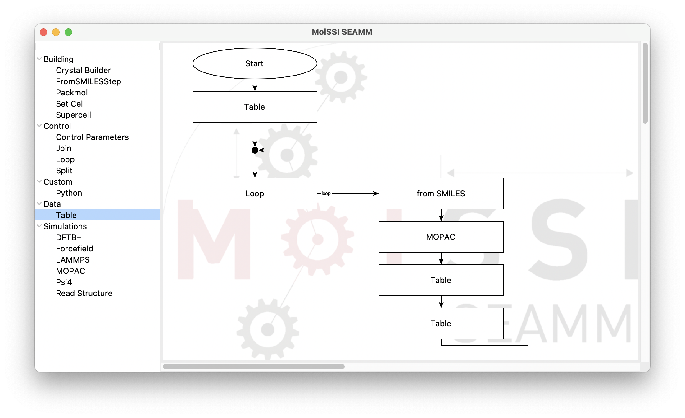
Completed flowchart.¶
Now all that is left is to run the flowchart. Select Run from the File menu, fill out the form with an appropriate title and description and click the OK button. Next move to your browser and open the DashBoard at http://localhost:5000, log in, list your jobs and explore the results for this job.
The first thing to notice is the table of results printed in job.out:
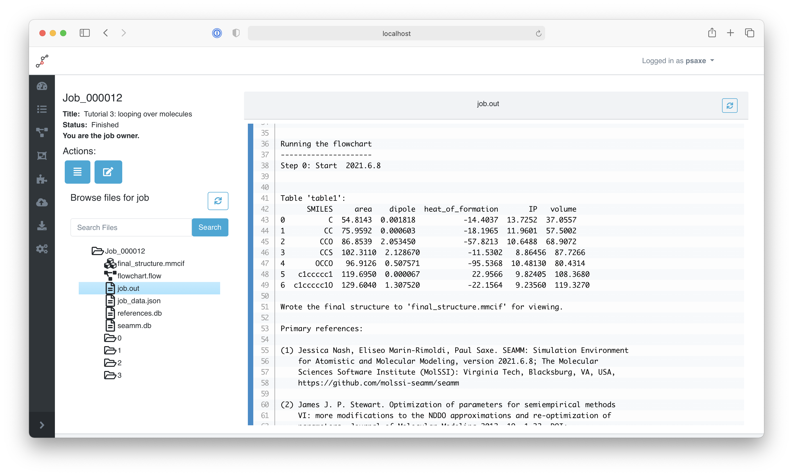
The printed table of results.¶
If you double-click on the folder for Step 3 in the directory on the left, it will open to show the iterations of the loop over the molecules. If you open one of the iterations you will see all the files for that iteration, includign the structure and iteration.out, which is a summary much like job.out but for just the one iteration:
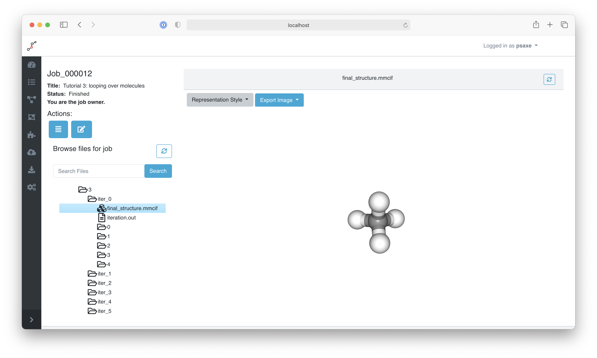
DashBoard show an iteration of the loop.¶
Finally, if you look at the CSV file that you created it will have been updated with the properties from MOPAC:
,SMILES,area,dipole,heat_of_formation,IP,volume
0,C,54.8143,0.00181763,-14.4037,13.7252,37.0557
1,CC,75.9592,0.00060312,-18.1965,11.9601,57.5002
2,CCO,86.8539,2.05345,-57.8213,10.6488,68.9072
3,CCS,102.311,2.12867,-11.5302,8.86456,87.7266
4,OCCO,96.9126,0.507571,-95.5368,10.4813,80.4314
5,c1ccccc1,119.695,6.72145e-05,22.9566,9.82405,108.368
6,c1ccccc1O,129.604,1.30752,-22.1564,9.2356,119.327
This finishes this tutorial. You have learnt how to use loops to iterate over the rows of a table, and how to use the tables to store results from the calculations.